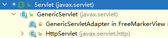

# Servlet 概述
# 一、什么是 servlet？
处理请求和发送响应的过程是由一种叫做 Servlet 的程序来完成的，并且 Servlet 是为了解决实现动态页面而衍生的东西。理解这个的前提是了解一些 http 协议的东西，并且知道 B/S 模式 (浏览器 / 服务器)。

请求，响应：通过给的链接应该可以知道这两个具体的内容
# 二、tomcat 和 servlet 的关系
Tomcat 是 Web 应用服务器，是一个 Servlet/JSP 容器. Tomcat 作为 Servlet 容器，负责处理客户请求，把请求传送给 Servlet, 并将 Servlet 的响应传送回给客户。而 Servlet 是一种运行在支持 Java 语言的服务器上的组件. Servlet 最常见的用途是扩展 Java Web 服务器功能，提供非常安全的，可移植的，易于使用的 CGI 替代品.
从 http 协议中的请求和响应可以得知，浏览器发出的请求是一个请求文本，而浏览器接收到的也应该是一个响应文本。但是在上面这个图中，并不知道是如何转变的，只知道浏览器发送过来的请求也就是 request，我们响应回去的就用 response。忽略了其中的细节，现在就来探究一下。

①：Tomcat 将 http 请求文本接收并解析，然后封装成 HttpServletRequest 类型的 request 对象，所有的 HTTP 头数据读可以通过 request 对象调用对应的方法查询到。
②：Tomcat 同时会要响应的信息封装为 HttpServletResponse 类型的 response 对象，通过设置 response 属性就可以控制要输出到浏览器的内容，然后将 response 交给 tomcat，tomcat 就会将其变成响应文本的格式发送给浏览器
Java Servlet API 是 Servlet 容器 (tomcat) 和 servlet 之间的接口，它定义了 serlvet 的各种方法，还定义了 Servlet 容器传送给 Servlet 的对象类，其中最重要的就是 ServletRequest 和 ServletResponse。所以说我们在编写 servlet 时，需要实现 Servlet 接口，按照其规范进行操作。
# 编写 Servlet
# 1、实现 Servelt 接口
public class Myservlet implements Servlet { | |
/** | |
* 初始化方法 | |
*/ | |
@Override | |
public void init(ServletConfig servletConfig) throws ServletException { | |
} | |
/** | |
* 自己实现 servlet 配置方法 | |
*/ | |
@Override | |
public ServletConfig getServletConfig() { | |
return null; | |
} | |
/** | |
* 服务方法 | |
*/ | |
@Override | |
public void service(ServletRequest servletRequest, ServletResponse servletResponse) throws ServletException, IOException { | |
System.out.println("执行了此方法..."); | |
} | |
/** | |
* 获取信息方法 | |
*/ | |
@Override | |
public String getServletInfo() { | |
return null; | |
} | |
/** | |
* 销毁方法 | |
*/ | |
@Override | |
public void destroy() { | |
} | |
} |
# 2、在 web.xml 中配置 Servlet，为什么需要配置？让浏览器发出的请求知道到达哪个 servlet，也就是让 tomcat 将封装好的 request 找到对应的 servlet 让其使用。
<servlet> | |
// 名字随意起与 servlet-mapping 中的 servlet-name 要一样 | |
<servlet-name>Myservlet</servlet-name> | |
// 全限定类型名 | |
<servlet-class>com.serverlet.test.Myservlet</servlet-class> | |
// 指定Servlet的创建时机 | |
// 1、第一次被访问时，创建为负数 | |
// 2、在服务器启动时，创建的值为0或者正数 | |
<load-on-startup>1</load-on-startup> | |
</servlet> | |
<servlet-mapping> | |
<servlet-name>Myservlet</servlet-name> | |
// 配置浏览器访问的路径 | |
<url-pattern>/ServletDemo</url-pattern> | |
</servlet-mapping> |
# 3、启动 Tomcat，浏览器访问 localhost:8080/ServletDemo，就会触发 service 方法。
# 4、执行原理：
1，当服务器接受到客户端浏览器的请求后，会解析请求 URL 路径，获取访问的 Servlet 的资源路径 2，直找 web.xml 文件，否有对应的 <url-pattern> 标签休内容。
3. 如果有，则在找到对应的 <servlet-class> 全类名
4.tomcat 会将字节码文件加载进内存，并且创建其对称 5、调用其方法
# 5、执行原理流程图
[外链图片转存失败，源站可能有防盗链机制，建议将图片保存下来直接上传 (img-dNWRgYEa-1620984671489)(C:\Users\Admin\AppData\Roaming\Typora\typora-user-images\image-20210512172848781.png)]
# 6、Servlet 中的生命周期期：
1、被创进：执行 init 方法，只执行一次
Servlet 的 init 方法，只执行一次，说明一个 Servlet 在内存中只存在一个对象，Servlet 是单例的多个用户同时访问时，可能存在线程安全问题。
解决：尽量不要在 Servlet 中定义成员变量。即使定义了成员变，也不要对修改值
2、提供服务：执行 service 方法，执行多次
每次访问 Servlet 时，service 方法都会被调用一次。
3、被销毁：执行 destroy 方法，只执行一次
Servlet 被销毁时执行。服务器关闭时，Servlet 被销毁只有服务器正常关闭时，才会执行 destroy 方法。destroy 方法在 servlet 被销毁之前执行，一般用于释放资源
# 使用 Servlet3.0：
* 好处：支持注解配置。可以不要 web.xml。
* 步骤：
1，创建 JavaEE 项目，选择 Servlet 的版本 3.0 以上，可以不创建 web.xml
2，定义一个类，实现 Servlet 接口
3，复写方法
4，在类上使用 @webservlet 注解，进行配置
# 1、Servlet 体系结构

HttpServlet 继承 GenericServlet 实现 Servlet
# 2、继承 HttpServlet
我们继承 HttpServlet 即可，重写 doGet、doPost 请求就行、什么请求重写什么方法。
@WebServlet(urlPatterns = {"/url"}) | |
public class Test extends HttpServlet { | |
@Override | |
protected void doGet(HttpServletRequest req, HttpServletResponse resp) throws ServletException, IOException { | |
super.doGet(req, resp); | |
} | |
@Override | |
protected void doPost(HttpServletRequest req, HttpServletResponse resp) throws ServletException, IOException { | |
super.doPost(req, resp); | |
} | |
} |
路径规则
@WebServlet("/*") // 什么路径都能访问 | |
@WebServlet("*.do") // 以.do 结尾的请求路径 |
# Http 概述
НТТР
# 请求消息数据格式
请求行
请求方式
-- HTTP 有 7 种请求方式，常用有两种
Get：请求参数在url后面，请求参数长度有限制，不安全。 Post：请求参数在请求体中，请求参数没有限制，相对安全。
请求头
- 请求名称
请求空行
- 就是空行，用来分隔请求头与请求体。
请求体 (正文)
- 封装 POST 请求消息的请求参数
| Header | 解释 | 示例 |
|---|---|---|
| Accept | 指定客户端能够接收的内容类型 | Accept: text/plain, text/html |
| Referer | 先前网页的地址，当前请求网页紧随其后，即来路 | Referer:https:www.baidu.com |
| User-Agent | User-Agent 的内容包含发出请求的用户信息 | User-Agent: Mozilla/5.0 (Linux; X11) |
| Host | 指定请求的服务器的域名和端口号 | Host: www.zcmhi.com |
# 响应消息格式
- 响应行
- 组成：协议 / 版本响应状态码状态码描述
- 响应状态码：服务器告诉客户端浏览器本次请求和响应的一个状态。
- 状态码都是 3 位数字
- 分类：
- 1xx：服务器就收客户端消息，但没有接受完成，等待一段时间后，发送 1xx 多状态码
- 2xx：成功。代表：2003.3xx：重定向。代表：302（重定向），304（访问缓存）
- 4xx：户端错误。代表：
- 404（请求路径没有对应的资源）
- 405：请求方式没有对应的 doxxx 方法
- 5xx：服务器端错误。代表：
- 500（服务器内部出现异常）
- 响应头
- 格式：头名称：值
- 常见的响应头：
- Content-Type：服务器告诉客户端本次响应体数据格式以及编码格式
- Content-disposition：服务器告诉客户端以什么格式打开响应体数据
- 值：
- in-line：默认值，在当前页面内打开
- attachment；filename-xxx：以附件形式打开响应体。文件下载
- 值：
- 响应空行
- 响应体：传输数据
# Request
# 1、request 的继承结构：
ServletRequest 接口
^ 继承
HttpServletRequest 接口
^ 实现
org. apache. catalina . connector.RequestFacadeR 类 (tomcat)
所以 request 在封装请求参数的时候是通过 Tomcat 的 RequestFacadeR 来实现的。
# 2、request 功能：
| 方法 | 作用 |
|---|---|
| getRequestURL | 返回客户端发出请求时的完整 URL。 |
| getRequestURI | 返回请求行中的资源名部分。 |
| getQueryString | 返回请求行的参数部分。 |
| getRemoteAddr | 返回发出请求的客户机的 IP 地址。 |
| getRemoteHost | 返回发出请求的客户机的完整主机名。 |
| getRemotePort | 返回客户机所使用的网络端口号。 |
| getLocalAddr | 返回 WEB 服务器的 IP 地址。 |
| getLocalName | 返回 WEB 服务器的主机名。 |
| getMethod | 得到客户机请求方式。 |
# 3、获取请求头数据
Enumeration<String> getHeaderNames();// 获取所有请求头名称 |
String getHeader(String var1); // 根据请求头名称获取请求头值 |
# 4、获取请求体数据
BufferedReader getReader() throws IOException; // 通过流接在获取请求体数据 (获取的是字符流) |
ServletInputStream getInputStream() throws IOException; // 获取的是字节流（文件） |
# 5、其他方法
获取请求参数通用方法（get post 可以用）：
String getParameter(String var1) // 根据参数名称获取参数值
Enumeration<String> getParameterNames(); // 获取所有请求参数名称
String[] getParameterValues(String var1); // 根据参数名称获取所有参数值的数组 /hobby=xx&hobby=xxx
Map<String, String[]> getParameterMap(); // 获取所有参数的 map 集合（键值对）
获取数据中文乱码问题：
- get 方式：Tomcat8 已经解决了乱码问题。
- post 方式：会乱码
- 解决：在获取参数前指定好编码格式 -> req.setCharacterEncoding ("utf-8");
请求转发：一种在服务器内部的资源跳转方式
- 步骤：
- 通过 request 对象获取请求转发器对象：RequestDispatcher getRequestDispatcher (String var1);
- 使用 RequestDispatcher 对象来进行转发：forward (ServletRequest var1, ServletResponse var2)
- 特点：
- 浏览器地址栏路径不发生变化。
- 只能转发到当前服务器内部资源中。
- 转发是一次请求
- 步骤：
共享数据：
- 域对象：一个有作用范围的对象，可以在范围内共享数据
- request：代表一次请求的范围，一般用于请求转发的多个资源中共享数据
- 方法：
- void setAttribute (String name,Object obj); 存储数据
- Object getAttribute (String name); 通过 name 获取数据
- void removeAttribute (String name); 通过 name 移除键值对
获取 ServletContext：
# Response
功能：设置响应消息
设置响应行
- 格式：HTTP/1.1 200 ok
- 设置状态码：setstatus（int sc）
设置响应头：setHeader（string name，string value）
设置响应体：
- 获取输出流
- 字符输出流：printwriter getwriter（）
- 字节输出流：Servletoutputstream getoutputstream（）
- 使用输出流，将数据输出到客户端浏览器
- 获取输出流
重定向
第一种方法
- response.setStatus(302);
- response.setHeader("location","/url");
第二种方法是提供了简化第一种的方法
- response.sendRedirect("/url")
重定向的特点：
- 地址栏发生变化
- 重定向可以访问其他站点（服务器）的资源
- 重定向是两次请求，不能 request 域对象共享数据。
输出字符
// 告诉浏览器消息体的编码，解决乱码response.setHeader("content-type","text/html;charset=utf-8");
// 简单设置编码上面的代码可以不写只写这一条代码response.setContentType("text/html;charset=utf-8");
PrintWriter pw = response.getWriter();
pw.write("你好！response");
# ServletContext 对象
- 概念：代表整个 web 应用，可以和程序的容器（服务器）来通信
- 获取：
- 通过 request.getServletContext ();
- 通过 HttpServlet 里面的 getServletContext ();
- 功能：
- 获取 MIME 类型：在互联网通信过程中定义的一种文件数据类型
- 格式：大类型 / 小类型 text/html image/jpeg
- 获取：string getMimeType（string file）
- 域对象：共享数据
- void setAttribute (String name,Object obj); 存储数据
- Object getAttribute (String name); 通过 name 获取数据
- void removeAttribute (String name); 通过 name 移除键值对
- servletcontext 对象范围：所有用户所有请求的数据
- 获取文件的真实（服务器）路径
- 方法 getRealPath (String name);
- 获取 MIME 类型：在互联网通信过程中定义的一种文件数据类型